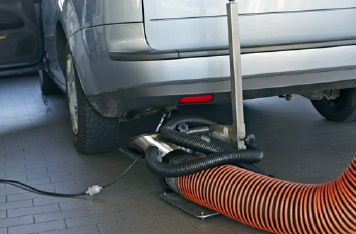
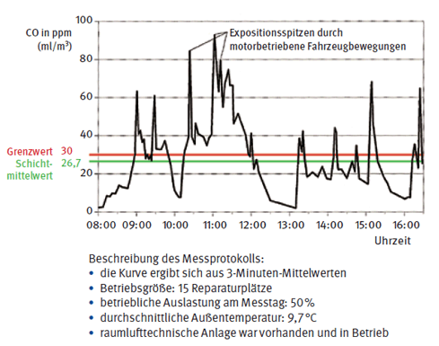
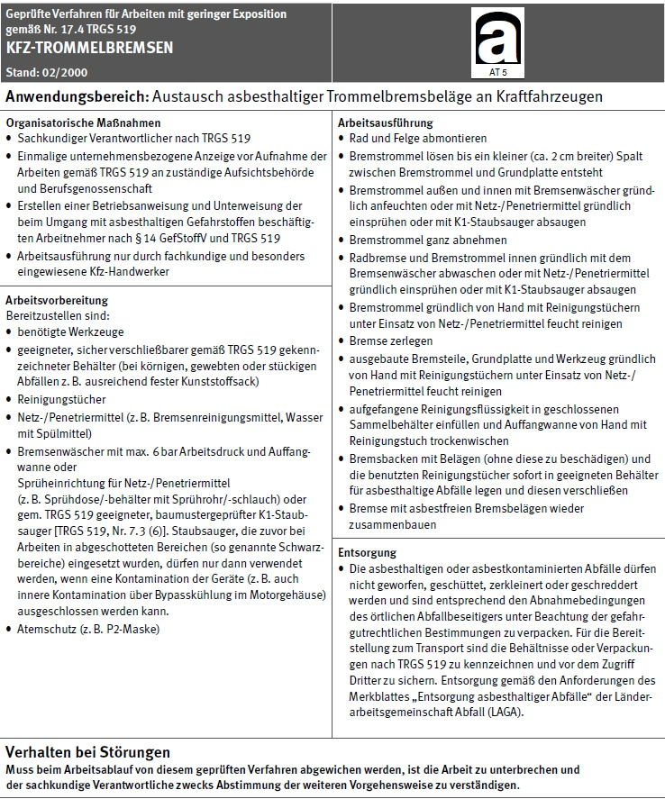
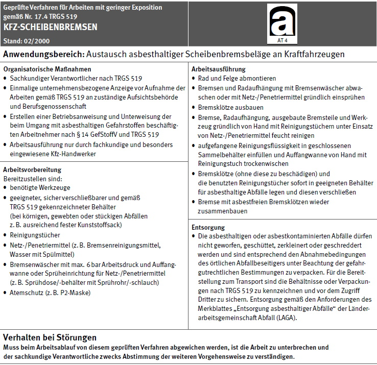
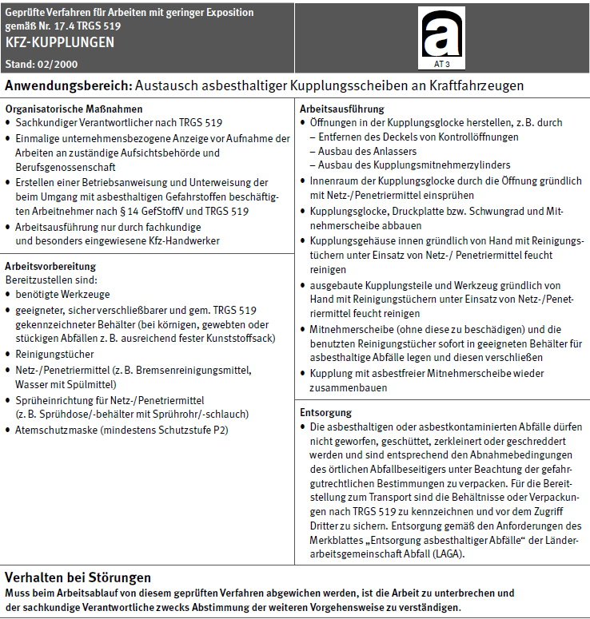
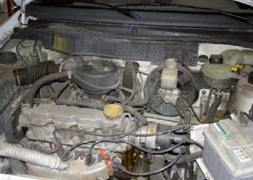
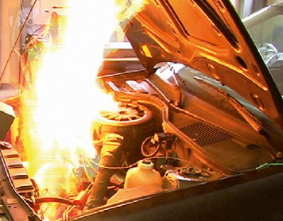
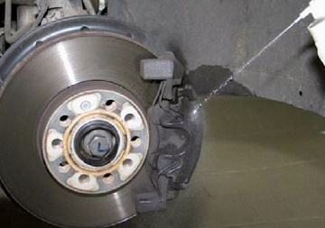
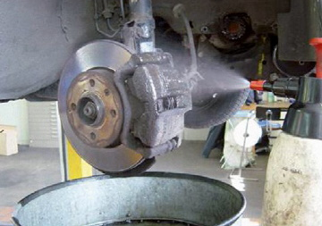

Gefahren durch Lärm sind bei Instandsetzungsarbeiten am Motor zu erwarten.
Bei der Abgasuntersuchung – insbesondere bei Dieselmotoren – sowie bei der Prüfung auf Leistungsprüfständen werden Schallpegel bis 105 dB(A) erreicht.
Des Weiteren kommt es zu hohen Schallemissionen bei der Karosseriereparatur. So wurden beim Ausbeulen Schallpegel von rund 100 dB(A) gemessen.
Hierbei steht die gehörschädigende Wirkung des Lärms, die zur Berufskrankheit "Lärmschwerhörigkeit" führen kann, im Vordergrund. Weiterhin kann die Einwirkung von Lärm beispielsweise zu Schlaflosigkeit, Erhöhung des Blutdrucks, Stoffwechselstörungen und ähnlichen Beeinträchtigungen führen.
Mit der Lärm- und Vibrations-Arbeitsschutzverordnung vom 6. März 2007 wurden die europäischen Arbeitsschutz-Richtlinien zu Lärm und Vibrationen in das nationale Recht umgesetzt. Konkretisiert wird die Verordnung durch die Technischen Regeln zur Lärm- und Vibrations-Arbeitsschutzverordnung (TRLV Lärm).
Dabei kommt der Gefährdungsbeurteilung eine zentrale Stellung zu. Mit ihr wird festgestellt, ob die Beschäftigten Lärm ausgesetzt sind. Für diese Beurteilung sind in der LärmVibrationsArbSchV Auslöse-und maximal zulässige Expositionswerte enthalten.
Je nachdem, ob die Auslösewerte erreicht oder überschritten werden, sind bestimmte Maßnahmen des Arbeitsschutzes von Unternehmerinnen und Unternehmern umzusetzen (DGUV Information "Lärm am Arbeitsplatz").
Die Maßnahmen sind:
Unabhängig von der Höhe der Lärmexposition besteht das Minimierungsgebot. Dabei sind die Lärmbelastungen am Arbeitsplatz zu vermeiden oder so weit wie möglich zu verringern. Technische Maßnahmen haben Vorrang vor organisatorischen Maßnahmen und persönlichen Schutzmaßnahmen (geeigneter Gehörschutz). Als Maßstab dient der Stand der Technik.
Gesundheitsschädliche Gase und Dämpfe treten in Kfz-Instandhaltungswerkstätten insbesondere durch Abgase von Verbrennungsmotoren auf.
Abgase von Verbrennungsmotoren enthalten in der Regel folgende Schadstoffe:
| CO | (Kohlenmonoxid) |
| NOx | (Stickoxide) |
| SO2 | (Schwefeldioxid) |
| Cn H2n+z | (Kohlenwasserstoffe) |
| Partikel | (Ruß) |
Die DGUV Regel 109-009 "Fahrzeuginstandhaltung" regelt unter anderem, dass Abgase von Verbrennungsmotoren durch Erfasstwerden an der Entstehungsstelle gefahrlos ins Freie geführt werden müssen. Das gilt besonders beim Laufen von Motoren im Stand, z. B. bei:

Abb. 17-1 Abgasabsaugung mit oberirdischer Anlage
Geeignet dazu sind getrennt von der Raumlüftung geführte Überflur- bzw. Unterfluranlagen (Bild 17-1), wenn sie:
Eine ausreichende Dimensionierung ist von diversen Randbedingungen abhängig, z. B. Anzahl der Ansaugöffnungen, Rohr- bzw. Schlauchlängen, und sollte von Fachfirmen errechnet werden.
Bei der Abgasuntersuchung und auf Leistungsprüfständen fallen wegen der hohen Drehzahlen vermehrt Abgase an.
Die hier eingesetzten Lüftungsanlagen erfordern für das gesamte System Schlauch- bzw. Rohrdurchmesser von mindestens
bei Absauggeschwindigkeiten von mindestens
Die sich daraus ergebenden Abgasvolumenströme (ca. 600 m3/h bei Ottomotoren und ca. 2 300 m3/h bei Dieselmotoren) erfordern regelmäßig eine gesonderte Absauganlage.
Nur schwer zu erfassen sind die Abgase, die durch motorbetriebene Fahrzeugbewegungen innerhalb der Werkstatt entstehen. Messungen mehrerer Institute haben übereinstimmend ergeben, dass im Winterhalbjahr, wenn Fenster und Türen regelmäßig geschlossen sind, der Grenzwert für CO von zurzeit 30 ppm (ml/m3) in größeren Werkstätten (mehr als vier Reparaturplätze) häufig überschritten wird.
Die Darstellung eines Messprotokolls (Bild 17-2) macht deutlich, dass jede motorbetriebene Fahrzeugbewegung hohe Emissionsspitzen erzeugt, die nur langsam durch natürliche bzw. technische Lüftung, falls vorhanden, weitgehend abgebaut werden.
Im vorliegenden Beispiel benötigte die Raumlüftung in den Zeiten, in denen keine motorkraftbetriebenen Fahrzeugbewegungen stattfanden, jeweils ca. 1 Stunde (zwischen 12 und 13 Uhr und zwischen 15 und 16 Uhr).

Bild 17-2: CO-Tagesprofil einer Pkw-Instandhaltungswerkstatt
Kohlenmonoxid ist giftig und verringert durch die Bindung an den roten Blutfarbstoff (Hämoglobin) den Sauerstofftransport im Blut. Darüber hinaus wird durch die Schadstoffe in den Abgasen der Sauerstoffanteil in der Atemluft reduziert. Deshalb sollten alle Möglichkeiten zur Reduzierung der CO-Emissionen ausgeschöpft werden, auch wenn der Grenzwert eingehalten wird. Dabei sollte eine Reduzierung der motorkraftbetriebenen Fahrzeugbewegungen an erster Stelle stehen.
Ohne Beachtung evtl. vorhandener technischer Lüftung sollten folgende CO-Minderungsmaßnahmen immer beachtet und Gewohnheit werden:
Besondere Gesundheitsgefahren werden bei Abgasen von Dieselmotoren gesehen. Dieselmotor-Emissionen sind krebserzeugende Gefahrstoffe.
Messerfahrungen zeigen, dass bereits wenige Motorläufe ohne Absaugung innerhalb eines geschlossenen Raumes genügen, um zu einer gesundheitlichen Belastung zu führen. Besondere Schutzmaßnahmen für Arbeitsbereiche, in denen Dieselmotoren betrieben werden, sind in der TRGS 554 "Abgase von Dieselmotoren" aufgeführt.
Technische Lüftungsanlagen sind zur Gewährleistung einer gleichbleibenden Absaugleistung regelmäßigen Prüfungen zu unterziehen. Regelmäßig bedeutet nach DGUV Regel 109-002 "Arbeitsplatzlüftung – Lufttechnische Maßnahmen", dass mindestens jährlich eine Prüfung durchgeführt werden muss, die in der Regel auch eine Funktionsmessung beinhaltet und deren Ergebnisse in ein Prüfbuch oder in einen Prüfbericht einzutragen sind.
Seit ca. 1985 werden in Kraftfahrzeugen asbestfreie Brems- und Kupplungsbeläge eingesetzt. Auch bei diesen Belägen muss der Abriebstaub, der unter anderem organische und anorganische Fasern enthalten kann, durch geeignete Maßnahmen (z. B. mit Heißdampf-Waschgerät, K1-Staubsauger), entfernt werden.
Abriebstaub darf nicht durch Abblasen entfernt werden!
Mit einer Freisetzung von Stäuben in die Atemluft der Beschäftigten ist bei folgenden Tätigkeiten zu rechnen:
Ein sicheres Erfassen und Absaugen des Staubs verlangt, dass Maschinen zur Bearbeitung von Bremsbelägen (Abdreh- oder Schleifgeräte) nur in Verbindung mit geeigneten Staubminderungsmaßnahmen betrieben werden. Die Maßnahmen umfassen das ausreichende Erfassen des entstehenden Feinstaubs, das Festhalten durch besondere Filtermaterialien sowie die Entsorgung ohne erneutes Freiwerden des Staubs. Auskünfte über geeignete Geräte erteilt Ihr Unfallversicherungsträger auf Anfrage.
Jede Verwendung von asbesthaltigen Brems- und Kupplungsbelägen ist seit dem 1. Januar 1995 in Deutschland verboten, aber schon seit Mitte der 80er Jahre werden in den in Deutschland verkauften Pkws asbestfreie Brems- und Kupplungsbeläge eingebaut.
Asbesthaltige Brems- und Kupplungsbeläge können heute in der Regel nur in Oldtimer-Fahrzeugen oder Spezialfahrzeugen angetroffen werden.
Alle Arbeiten an asbesthaltigen Brems- und Kupplungsbelägen müssen bei der zuständigen Berufsgenossenschaft und den Arbeitsschutzbehörden angezeigt werden. Dabei müssen die Forderungen der TRGS 519 "Asbest – Abbruch-, Sanierungs- oder Instandsetzungsarbeiten", z. B. befähigte Person, arbeitsmedizinische Vorsorgeuntersuchung, Einhaltung von Umgangsvorschriften, Entsorgung von Abfällen, beachtet werden.
Für die Entfernung von asbesthaltigen Reibbelägen sind nach der TRGS 519 standardisierte Arbeitsverfahren (Bilder 17-3a, b und c) erstellt worden, die zu beachten sind:

Abb. 17-3a Standardisierte Arbeitsverfahren beim Austausch von asbesthaltigen Reibbelägen – Kfz-Trommelbremsen

Abb. 17-3b Standardisierte Arbeitsverfahren beim Austausch von asbesthaltigen Reibbelägen – Kfz-Scheibenbremsen

Abb. 17-3c Standardisierte Arbeitsverfahren beim Austausch von asbesthaltigen Reibbelägen – Kfz-Kupplungen
Die Verschmutzung von Fahrzeugen und Fahrzeugteilen erfordert die Anwendung von speziellen Reinigungsmitteln, die häufig gefährliche Stoffe enthalten. Dies erfordert besondere Maßnahmen für den Gesundheitsschutz der Beschäftigten. Außerdem können Reinigungsmittel entzündlich oder leicht entzündlich sein, sodass zusätzlich die Gefahr von Bränden oder Explosionen besteht.
Grundsätzlich gibt es keine ungefährlichen Reinigungsmittel. Je intensiver und schneller ihre Wirkung ist, desto größere Gefahren sind zu vermuten.
Die Mehrzahl der Reinigungsmittel unterliegen der Gefahrstoffverordnung (GefStoffV). Dies bedeutet, dass die Behälter für sehr viele Mittel bereits vom Hersteller mit Gefahrenhinweisen und Sicherheitsratschlägen gekennzeichnet sind. Reinigungsmittel ohne solche Kennzeichnungen oder mit dem Hinweis "Nicht kennzeichnungspflichtig nach Gefahrstoffverordnung" sind jedoch keinesfalls als ungefährlich zu betrachten.
Vielmehr muss sich die Unternehmerin oder der Unternehmer unmittelbar oder durch Rückfragen beim Hersteller oder Lieferer Gewissheit darüber verschaffen, welche Maßnahmen im Einzelnen zu beachten sind. Am einfachsten kann dies durch Anforderung des Sicherheitsdatenblatts, gemäß Gefahrstoffverordnung, für das betreffende Reinigungsmittel geschehen.
Bei Reinigungsarbeiten in der Fahrzeuginstandhaltung dürfen Flüssigkeiten, die giftig oder gesundheitsschädlich sind, nicht verwendet werden. Reinigungsflüssigkeiten mit einem Flammpunkt unter 60 °C sind möglichst zu vermeiden.
Empfohlen werden:
Wässrige Lösungen sind anorganische Reinigungsmittel aus alkalischen, neutralen, mildalkalischen oder sauren Lösungen. Sie können durch Zusätze, wie Netzmittel, Rostschutzkomponenten, Emulgatoren, bestimmten Qualitätsanforderungen angepasst sein.
Organische Lösemittel sind insbesondere:
Organische Lösemittel sollen nur verwendet werden, wenn nachweislich keine anderen Reinigungsmittel eingesetzt werden können.
Chlorkohlenwasserstoffe (CKW) sollten wegen ihrer Gesundheitsschädlichkeit nicht als Reinigungsmittel verwendet werden.
Pflanzenölester gehören streng genommen zu den organischen Lösemitteln, von denen sie sich jedoch durch ihren sehr hoch liegenden Flammpunkt (über 100 °C) unterscheiden. Sie werden aus nachwachsenden Rohstoffen hergestellt und gelten deshalb als besonders umweltschonend. Als hervorragende positive Eigenschaften sind anzuführen: hohes Öl- und Fettlösevermögen, niedrige Flüchtigkeit (Verdunstung), hoher Flammpunkt, deshalb nur geringe Brandgefahr, bei manueller Anwendung keine Explosionsgefahr, Korrosionsschutz durch Restbeölung der Werkstücke.
Gerade wenn stark verschmutzte Teile zuerst eingeweicht und dann manuell gereinigt werden, kommen diese positiven Eigenschaften besonders zur Geltung, selbst wenn auch hier wegen der Entfettung der Haut und vor allem wegen des zu entfernenden Schmutzes Schutzhandschuhe benutzt werden müssen.
Gefahren beim Reinigen mit Wasserdampf oder Heißwasser bestehen vor allem durch die hohen Temperaturen. Neben dem Abführen der entstehenden Dämpfe sind deshalb besonders persönliche Schutzausrüstungen (Gummistiefel, Schürze, Gummihandschuhe mit langen Stulpen, Schutzbrille) erforderlich. Wenn Flüssigkeitsstrahlgeräte (Hochdruckreiniger, Dampfstrahlgeräte) eingesetzt werden, sind die notwendigen Anforderungen an die Geräte sowie die Sicherheitsmaßnahmen für die Beschäftigten in der DGUV Regel 100-500 und 100-501 "Betreiben von Arbeitsmitteln" Kap. 2.36 "Flüssigkeitsstrahler" enthalten.
Den Gefahren beim Reinigen mit wässrigen Lösungen kann insbesondere begegnet werden durch:
Sicherheitsmaßnahmen beim Reinigen mit organischen Lösemitteln enthalten die DGUV Regel 109-010 "Richtlinien für Einrichtungen zum Reinigen von Werkstücken mit Lösemitteln" sowie die DGUV Information 209-088 "Reinigen von Werkstücken mit Reinigungsflüssigkeiten", und zwar für alle Anlagen mit mehr als 1 Liter Füllmenge, z. B. Waschbehälter, Tauchbehälter, Waschgeräte, Teile-Reinigungsanlagen.
Danach müssen Unternehmerinnen und Unternehmer in einer Betriebsanweisung in verständlicher Form und Sprache für die Beschäftigten die zu verwendenden Reinigungsmittel festlegen, Gefahrenhinweise geben und die notwendigen Sicherheitsmaßnahmen anordnen.
Beim Umgang mit Kaltreinigern sind folgende Sicherheitsmaßnahmen einzuhalten: Dämpfe von Kaltreinigern müssen abgesaugt werden oder es müssen Atemschutzgeräte benutzt werden. Hautkontakt ist zu vermeiden. Deshalb sind persönliche Schutzausrüstungen, wie Handschuhe, Schürzen oder Schutzbrillen, erforderlich.
Lässt sich ein Hautkontakt nicht vermeiden, ist vorbeugende und nachgehende Hautpflege erforderlich. Essen, Trinken, Kaugummikauen, Alkoholgenuss und Rauchen sind bei Arbeiten mit Kaltreinigern zu unterlassen. Mit steigender Tendenz kommen im Instandhaltungsbereich so genannte Bremsen- oder Universalreiniger zum Einsatz. Bei diesen Reinigern handelt es sich in der Regel um Kohlenwasserstoffe mit einem Flammpunkt unter 23 °C, für die – von Ausnahmen abgesehen – eine Verwendungsbeschränkung gilt (DGUV Regel 109-009 "Fahrzeuginstandhaltung"). Darüber hinaus darf die zulässige Lagermenge von Flüssigkeiten, Flammpunkt < 23 °C, im allgemeinen Arbeitsraum den Bedarf einer Schicht nicht überschreiten.
Wenn es sich nicht vermeiden lässt, dass Reinigungsmittel mit einem Flammpunkt unter 23 °C – nicht jedoch Ottokraftstoff – verwendet werden, sind besondere Vorsichtsmaßnahmen erforderlich:
Das Reinigen von Fußböden und Wänden, besonders in Arbeitsgruben, mit brennbaren Flüssigkeiten, die einen Flammpunkt unter 23 °C haben, ist in jedem Fall unzulässig.
Für entzündbare Reinigungsflüssigkeiten mit einem Flammpunkt ≤ 60 °C müssen möglichst kleine (höchstens 5 Liter), unzerbrechliche, nicht brennbare und selbstschließende Gefäße (Waschbehälter) verwendet werden, die bezüglich Art und Gefährlichkeit des Inhalts zu kennzeichnen sind. Sie müssen so aufgestellt werden, dass sie sich nicht in der Nähe von Zündquellen, insbesondere Schweiß- oder Schleifarbeiten, befinden und nicht durch Sonneneinstrahlung oder andere Wärmequellen unzulässig erwärmt oder durch Personen und Fahrzeuge umgestoßen werden können.
Bei Reinigungsarbeiten an Fahrzeugen unter Verwendung entzündbarer Flüssigkeiten sind besondere Maßnahmen gemäß der Gefährdungsbeurteilung zu treffen.
Hierbei nehmen die Aerosoldosen als Einweggebinde einen großen Anteil ein. Des Weiteren erfolgt die Anlieferung in Fässern zur Entnahme der Flüssigkeit in Mehrwegdruckdosen und Pumpsprayern. In kleinen Mengen werden die Reiniger auch mit einem Pinsel aus einem offenen Gefäß heraus verwendet. Die Reinigungsflüssigkeit wird auf die zu reinigenden Oberflächen aufgetragen. Ein Teil des Schmutzes wird gelöst und durch die Flüssigkeitsmenge abgeschwemmt. Dabei verdampfen von Beginn an die Lösemittel, bis die Oberfläche trocken ist (Abbildung 17-4).

Abb. 17-4 Motorraum
Bei der Auswahl der Reiniger beeinflusst eine Vielzahl von Parametern, z. B. die Reinigungswirkung, das Abschwemm- und Ablüftverhalten, der Geruch, die universelle Einsetzbarkeit, die Toxizität, das Gefährdungspotenzial hinsichtlich des Brand- und Explosionsschutzes, vor allem aber der Preis, die Entscheidungsfindung.
Für den Bereich der Sicherheit und des Gesundheitsschutzes bei der Arbeit ist speziell die Betrachtung der Inhaltsstoffe sowie die Brand- und Explosionsgefährdung von Bedeutung. Die Gefährdungen durch die Inhaltsstoffe können aufgrund der Kennzeichnung auf den Gebinden und durch die Einsichtnahme in das Sicherheitsdatenblatt des Herstellers beurteilt werden. Hier kommt es besonders auf n-Hexan- und Aromatenfreiheit an.
Der Brand- und Explosionsschutz wird grundlegend in der Gefahrstoffverordnung geregelt.
Die Konkretisierung dieser Verordnungen geschieht durch die folgenden Technischen Regeln:
Als Feuer wird die Flammenbildung bei der Verbrennung (Oxidation mit geringer Geschwindigkeit) eines brennbaren Stoffes, unter Abgabe von Wärme und Licht bezeichnet.
Bei einer Explosion handelt es sich um eine Oxidations- oder Zerfallsreaktion mit einem plötzlichen Anstieg von Temperatur, Druck oder beidem gleichzeitig. Dabei kommt es zu einer plötzlichen Volumenausdehnung von Gasen und zur Freisetzung von großen Energiemengen auf kleinem Raum. Die plötzliche Volumenvergrößerung verursacht eine Druckwelle, die im Falle einer Eindämmung noch verstärkt wird.
Oft wird bei einer Explosion ohne nennenswertes Schadensausmaß der Begriff "Verpuffung" verwendet. Damit wird eine Explosion beschrieben, bei der die Verbrennungsreaktion zwar zu einer Volumenerweiterung, nicht aber zu einem relevanten Druckaufbau führte – zu beobachten bei Reinigungsarbeiten mit anschließender Explosion im Motorraum bei geöffneter Motorhaube (Abbildung 17-5).

Abb. 17-5 Explosion/Verpuffung im Motorraum
Grundsätzlich ist bei der Beurteilung der Explosionsgefahr davon auszugehen, dass eine Entzündung eventuell vorhandener explosionsfähiger Atmosphäre stets möglich ist. Hierbei ist es also unerheblich, ob Zündquellen vorhanden sind.
So stellt sich die Frage, ob beim Umgang mit entzündbaren Reinigern mit einer brennbaren oder auch mit der Bildung einer explosionsfähigen Atmosphäre zu rechnen ist.
Das Auftreten einer explosionsfähigen Atmosphäre hängt von den Eigenschaften und den möglichen Verarbeitungszuständen (Gas, Dämpfe oder Nebel [Aerosol]) der Stoffe ab.
Im Falle der flüssigen lösemittelhaltigen Reiniger sind folgende Stoffeigenschaften zu berücksichtigen:
Ob eine explosionsfähige Atmosphäre zündet und sich die Flamme selbstständig weiter ausbreitet, ist von der Konzentration des brennbaren Stoffs im Gas-, Dampf-Luftgemisch oder Nebel abhängig. Sie muss innerhalb der Zündgrenzen (Explosionsgrenzen UEG und OEG) liegen. Liegt die Konzentration unterhalb der UEG, ist das Gemisch zu mager, oberhalb der OEG ist es zu fett. In der Praxis können sich zu fette Gemische schon durch geringe Luftbewegungen (natürlicher Zug, Umhergehen von Personen, thermische Konvektion) in einzelnen Bereichen so weit verdünnen, dass diese dann innerhalb der Zündgrenzen liegen.
Üblicherweise ist bei den brennbaren Reinigern die Dichte der entstehenden Gase größer als die Dichte der Luft. Dabei fallen sie aus einem höheren Ort nach unten und vermischen sich fortschreitend mit der sie umgebenden Luft. Die schweren Schwaden breiten sich aus und können weite Strecken überbrücken.
Neben den Stoffeigenschaften ist die Art der Verarbeitung einer Flüssigkeit, z. B. Verspritzen (Abbildung 17-6) oder Versprühen (Abbildung 17-7), von großer Bedeutung.

Abb. 17-6 Spritzstrahl

Abb. 17-7 Besprühen eines Bremssattels
Werden brennbare Flüssigkeiten in feine Tröpfchen verteilt, ist auch bei Temperaturen unterhalb des unteren Explosionspunkts (UEP) mit der Bildung von explosionsfähiger Atmosphäre zu rechnen. Dabei verhalten sich sowohl niedrig- als auch hochsiedende Reiniger auf Lösemittelbasis hinsichtlich des Zündverhaltens annähernd gleich. In diesem Fall ist der Flammpunkt nicht entscheidend.
Ob eine explosionsfähige Atmosphäre in gefahrdrohender Menge vorhanden ist, hängt von der möglichen Auswirkung der Explosion ab. Im Fall einer Explosion von gefährlicher explosionsfähiger Atmosphäre ist stets mit einem hohen Schadensausmaß und Personenschäden zu rechnen. In den Technischen Regeln für Gefahrstoffe werden Beurteilungshilfen gegeben.
Welche Maßnahmen sind nun zu treffen, damit die Bildung einer explosionsfähigen Atmosphäre bzw. einer gefährlichen explosionsfähigen Atmosphäre unterbleibt?
Dazu gelten für den vorbeugenden Explosionsschutz die folgenden Leitgedanken:
Ausgehend von den üblichen Austragsmengen der Druckdosen ist die reine Spritzzeit auf max. 10 s zu begrenzen. Gleichzeitig zu dieser Mengenbegrenzung ist auch die Größe der Verdunstungsfläche auf 1 m2 zu beschränken.
Vorrangig ist dann die Verdünnung der freigesetzten brennbaren Gase und Dämpfe durch eine wirksame Lüftung. Dabei ist die Konzentration bis unterhalb der unteren Explosionsgrenze zu halten, sodass eine Zündung ausbleibt. Analog zu den Gasarbeitsplätzen in der Kfz-Instandhaltung kann bei Reinigungsarbeiten mit lösemittelhaltigen Flüssigkeiten eine Mindestluftwechselrate von 3/h herangezogen werden. Diese Luftwechselrate ist während und ca. 5 Minuten nach Reinigungsende aufrechtzuerhalten.
Trotz Lüftungsmaßnahmen können im Bereich der Austrittsstelle von brennbaren Stoffen explosionsfähige Konzentrationen verbleiben. Auch lassen Strömungshindernisse, wie Werkstattausstattungen und Fahrzeuge, Totzonen entstehen, in denen die Luftbewegung nur schwach oder nicht ausgebildet ist. Solche Totzonen können auch direkt im Fahrzeug entstehen. So ist bei aktuellen Fahrzeugen der Motorraum derart verkleidet, dass die schweren Gase nur langsam abfließen können.
In unbelüfteten tief liegenden Bereichen, wie Arbeitsgruben, Unterfluranlagen, Kanälen und Schächten, muss auch mit dem Vorhandensein einer explosionsfähigen Atmosphäre gerechnet werden. Außerdem muss berücksichtigt werden, dass im zeitlichen Verlauf nur eine gewisse Menge von brennbaren Gasen und Dämpfen bis unterhalb der UEG verdünnt werden kann.
Zusammenfassend sind diese Erkenntnisse in der Abbildung 17-8 dargestellt. Werden alle der dort genannten fünf Anwendungsbedingungen (1) bis (5) erfüllt, ist noch mit einer explosionsfähigen Atmosphäre zu rechnen, dies auch nur kurzfristig und in lüftungsbedingten Totzonen. Wenn jedoch mindestens eine dieser Bedingungen nicht erfüllt ist, muss mit der Bildung von gefährlicher explosionsfähiger Atmosphäre gerechnet werden. Dann müssen Explosionsschutzmaßnahmen im Rahmen eines in sich widerspruchsfreien Explosionsschutzkonzepts ausgewählt und bewertet werden. Die getroffenen Maßnahmen sind im Explosionsschutzdokument und in der Betriebsanweisung festzuhalten.
Zu beachten ist jedoch, dass bei der Applikation Sprühnebel die Zündwilligkeit, auch bei einer UEG > 1,5 Vol.-%, größer als beim Spritzstrahl ist!
Beachtenswert sind in diesem Zusammenhang neuere Reiniger, die trotz eines Flammpunkts von > 23 °C eine geringere Explosionsauswirkung mit deutlich verringertem Nachbrennverhalten zeigen. Diese reduzieren zwar das Explosionsrisiko nicht total, wohl aber graduell.
Diese Produkte entsprechen Kriterien, die vom damaligen Fachausschuss "Metall und Oberflächenbehandlung (FA MO – jetzt Fachbereich Oberflächentechnik und Schweißen)" der Deutschen Gesetzlichen Unfallversicherung (DGUV) gemeinsam mit der Physikalisch Technischen Bundesanstalt (PTB) festgelegt wurden:
| Applikation Bedingungen: | Spritzstrahl | ||
| (1) | Stoffeigenschaften | Hohe elektrische Ruheleitfähigkeit > 1000 pS/m | |
| (2) | Luftwechselrate | 6 3/h während und 5 min nach Reinigungsende (z. B. Durchzug oder technische Lüftung) | |
| (3) | Verarbeitungszeit (Menge) | < 10 s je Anwendung (kein gleichzeitiges Spritzen) | |
| (4) | Behandelte Fläche, einschließlich Abtropfbereich | < 1 m2 | |
| (5) | Treibgas | nicht brennbar (z. B. CO2 oder Stickstoff) | |
| Bei Nichterfüllung einer der angegebenen Bedingungen in den Zeilen (1) bis (5) ist mit einer gefährlichen explosionsfähigen Atmosphäre zu rechnen. Dann ist ein Explosionsschutzkonzept zu erstellen und die Maßnahmen sind im Explosionsschutzdokument festzuhalten. | |||
Abb. 17-8 Anwendungsbedingungen
In Anbetracht der Substitutionspflicht nach Gefahrstoffverordnung ist ein Reiniger, der alle vier Produktkriterien erfüllt, Reinigern vorzuziehen, die diese nur teilweise oder gar nicht erfüllen. Allerdings ist die Substitution nicht auf die Grenzen der Reiniger auf Lösemittelbasis beschränkt. Es muss geprüft werden, ob die Reinigung z. B. mit wässrigen Lösungen oder Niederdruckdampf gleichermaßen erfolgen kann.
Bei all den Bemühungen der Hersteller der Reinigungsmittel und bei allen organisatorischen Anordnungen der betrieblichen Vorgesetzten verbleibt bei jedem einzelnen Mitarbeiter und jeder einzelnen Mitarbeiterin die eigene Mitverantwortung für die Sicherheit und den Gesundheitsschutz bei der Arbeit, indem er oder sie diese hoch wirksamen Reinigungsmittel sparsam, besonnen und zweckbestimmt anwendet.
Die Beschäftigten in der Fahrzeuginstandhaltung – allgemeiner Werkstattbereich, Karosserieabteilung, Lackiererei, Pflegebereich, Waschstraßen – gehen häufig mit Stoffen um, die zu Hautschädigungen führen können. Dazu gehören z. B. Motorenöle, Fette, Kraftstoffe, Kühlmittel, Lösemittel, Lacke, Harze, Kleber. Beim Umgang mit gebrauchtem Motoröl kann aufgrund der Verschmutzungen auch die Gefahr von Hautkrebserkrankungen bestehen.
Um Hauterkrankungen trotz des Umgangs mit diesen Stoffen zu vermeiden, ist zu prüfen, ob sich der schädigende Stoff durch einen weniger oder gar nicht schädigenden Stoff ersetzen lässt. Ist dies nicht möglich, muss der Hautkontakt mit dem schädigenden Stoff, z. B. durch Änderung des Arbeitsablaufes oder Einsatz von persönlichen Schutzausrüstungen (z. B. Schutzhandschuhe), vermieden oder mindestens verringert werden.
Auch Hautschutzmittel gehören zum Bereich der persönlichen Schutzausrüstungen.
Sie umfassen die drei Stufen:
Zur Vermeidung von Hauterkrankungen sind alle drei Stufen von gleicher Wichtigkeit.
Darüber hinaus ist
durchzuführen.
Um die richtige Auswahl geeigneter Produkte zu erleichtern, sind für typische Arbeitsbereiche oder Arbeitsstoffe vier Musterhautschutzpläne erstellt worden. Siehe auch DGUV Information 209-022 "Hautschutz in Metallbetrieben".
Die individuelle Hautverträglichkeit auf die genannten Produkte kann unterschiedlich sein, sodass eine Eigenerprobung sinnvoll erscheint.
Unternehmerinnen und Unternehmer müssen unter Beachtung der zu erwartenden Hautgefährdungen einen Hautschutzplan erstellen (Abbildung 17-9) und die Präparate zur Verfügung stellen.
Bei Beginn einer Hauterkrankung sollten die jeweils Betroffenen den Betriebsarzt, die Betriebsärztin oder ihre Hausärztin, ihren Hausarzt informieren, damit die Einleitung der notwendigen Heilmaßnahmen gewährleistet ist.
| Hautgefährdung | Hautschutzmittel | Hautreinigungs- mittel |
Hautpflegemittel | Schutzhand- schuhe |
| vor Arbeitsbeginn, auch nach Pausen | vor Pausen und nach der Arbeit |
nach Arbeitsende, gegebenenfalls nach Hautreinigung | soweit nicht generell vorgesehen, Hinweise auf speziellen Einsatzbereich | |
| Werkstatt — Öl, Fett, Benzin |
Produktname | Produktname | Produktname | Produktname |
| Waschhalle | Produktname | Produktname | Produktname | Produktname |
Abb. 17-9 Tätigkeitsbezogener Hautschutzplan